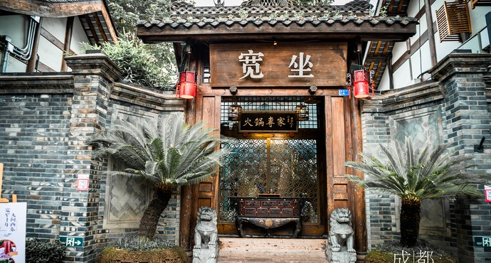
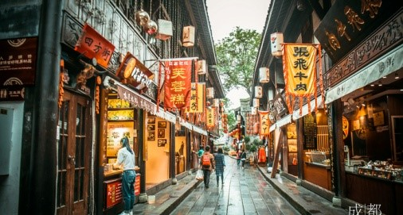
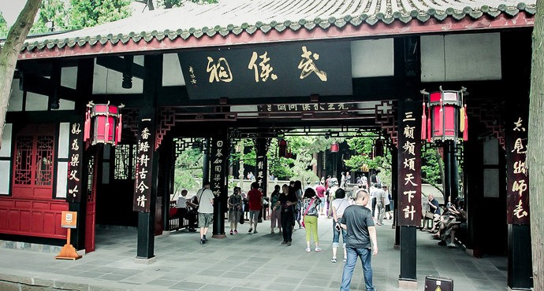
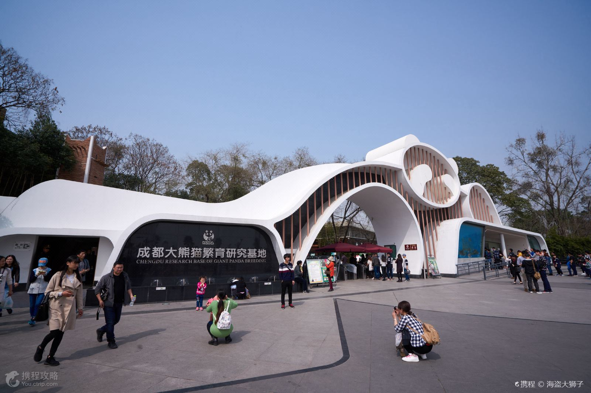
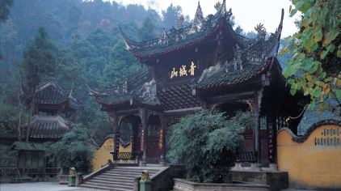
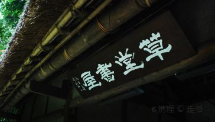

宽窄巷子
>>> 四川省成都市青羊区金河路口宽窄巷子

- 由宽巷子、窄巷子和井巷子组成，是成都现存较成规模的清朝古街道。
- 宽巷子集中了整个街区最多最完整的老建筑，在这里可以品碗茶，吃正宗川菜，体验老成都的风土人情。
- 窄巷子既有清末民初的建筑，也有早期西式洋楼，是以西式饮食文化、艺术休闲为主的休闲生活品味区。
- 井巷子是典型的民俗成都缩影，除了引人入胜的砖文化墙，还汇聚了成都特色小吃、民俗玩意儿等。
- 电话 028-86259233
- 网址 http://www.kzxz.com.cn/
- 用时参考
1-3小时
交通
乘地铁2号线至人民公园站下车，步行400 米即可到达。
乘地铁4号线至宽窄巷子站下车即可到达。
乘62、70、93、126 环线、127、163、340 路公交车至宽窄巷子站下车。
门票
免费开放时间
全天 - 锦里是一条仿古商业街，是成都人气最旺景点之一，也是成都武侯祠博物馆的一部分。
- 在这里，你可以欣赏捏泥人、摆糖画的手艺，也可以逛逛极富三国特色的店铺。
- 街里还有各种四川特色小吃，各种茶楼、咖啡馆、酒吧、客栈等随时可落座。
- 黄昏时分，锦里会亮起灯，颇有韵味，适合拍照游玩。
- 电话 028-66311313
- 网址 http://www.cdjinli.com/
- 用时参考
1-3小时
交通
乘1、57、82、334、335 路至武侯祠站下车；乘8、21路至武侯祠东街站下车
门票
免费开放时间
全天tips:
商店开放时间 05:00-23:00。 - 纪念的是蜀国丞相诸葛亮，明朝初年并入汉昭烈庙，也是全国影响最大的三国遗迹博物馆。
- 由惠陵、汉昭烈庙、武侯祠三部分组成。祠内供奉刘备、诸葛亮等蜀汉英雄塑像50尊。
- 武大门、二门、刘备殿、过厅、诸葛亮殿、三义庙等，排列在从南到北的一条中轴线上。
- 电话 028-85535951
- 网址 http://www.wuhouci.net.cn/
- 用时参考
1-3小时
交通
乘坐1、57、82、334、335路公交车在武侯祠站下车或乘坐8、21路公交车在武侯祠东街站下车 。
门票
成人票:全价票50人民币/年票100人民币 半票:6周岁-18周岁的未成年人/学生、全日制大学本科及以下学历学生凭有效证件。 免票:离休人员、残疾人、现役军人、公安干警、革命烈属、本市老年人、60周岁以上的老年人、6周岁及以下或身高1.3米及以下的儿童、大中小学生15人及以上的团体凭有效证件。开放时间
08:00-20:00；停止售票时间:19:30 (5月1日-10月31日 周一-周日) 08:00-18:30；停止售票时间:17:30 (11月1日-次年4月30日 周一-周日) - 基地内有很多萌萌的大熊猫，你可以近距离的去观赏这些萌哒哒的国宝们。
- 基地位于成都市北郊，距市区约10公里，建设完全模拟大熊猫野外生活环境，建有湖泊、溪流、竹林、草坪等。
- 基地设有众多“熊猫别墅”就是熊猫的封闭休闲场所。
- 内有露天园子和室内休息室，天气凉爽时大熊猫会在园子内玩耍，游人可以隔着栏杆观赏萌萌的大熊猫；天气炎热时，大熊猫就躲在开着空调的休息室内，这时候只能隔着玻璃观看了。
- 电话 028-83510033
- 网址 http://www.panda.org.cn/
- 交通
乘坐公交198路至“熊猫基地”站。在武侯祠和锦里，有直达基地的景区直通车。
开放时间
全年 07:30-18:00；入园时间：07:30-17:00。 - 青城山为中国道教发源地之一，属道教名山。位于四川省都江堰市西南，古名“天仓山”，又名“丈人山”。东距成都市68公里，处于都江堰水利工程西南10公里处。主峰老霄顶海拔1260米。在四川名山中与剑门之险、峨嵋之秀、夔门之雄齐名，有“青城天下幽”之美誉。
- 青城山是中国历史名山和重点风景名胜区，并于2000年同都江堰共同作为一项世界文化遗产被列入世界遗产名录。
- 全山林木青翠，四季常青，诸峰环峙，状若城廓，故名青城山。丹梯千级，曲径通幽，以幽洁取胜，自古就有“青城天下幽”的美誉。
- 交通
成都新南门客运站有班车发往青城山。都江堰景区可乘坐公交101路到达青城山。
开放时间
3月1日-11月30日 09:00-17:30；12月1日-次年2月29日 08:30-17:00；停止入场时间分别为：3月1日-11月30日：17:00、12月1日-次年2月29日：16:30。 - 杜甫草堂，位于成都市西门外的浣花溪畔，是唐代著名诗人杜甫流寓成都时的故居。杜甫在此居住近四年，创作了上百首诗歌，草堂因此被视为中国文学史上的“圣地”。
- 现今的杜甫草堂是经宋、元、明、清多次修复而成。 今日的草堂，园内亭台林立，古木参天。从正门进入后，大廨、诗史堂、工部祠三座主要建筑物由南至北依次排列于中轴线上。
- 工部祠的东北部，是少陵碑亭和大诗人当年的茅屋故居，茅屋以东是盆景园，往南依次是浣花祠、花径、大雅堂和靠近南门的草堂陈列室。
- 茅屋故居，是借鉴川西民居的特点复建的，成为了杜甫草堂的标志性景观。茅屋东侧的盆景园内，有1999年建成的“杜诗书法木刻廊”，陈列着百余件杜诗书法木刻作品，其中有“杜诗绝唱、书法绝品、楠木绝材、刻工绝活”等四绝。
- 电话 028-66311313
- 网址 http://www.cddfct.com/main.html
- 交通 乘坐地铁4号线，在草堂北路站下车后步行可到。乘坐1024路等公交车，在杜甫草堂博物馆站下车可到。
锦里
>>> 四川省成都市武侯区武侯祠大街231号附1号

武侯祠
>>> 四川省成都市武侯区武侯祠大街231号

成都大熊猫繁育研究基地
>>> 成都市成华区外北熊猫大道1375号

青城山
>>> 都江堰市西南部青城山风景区

杜甫草堂
>>> 成都市青羊区青华路37号
